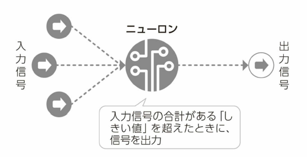
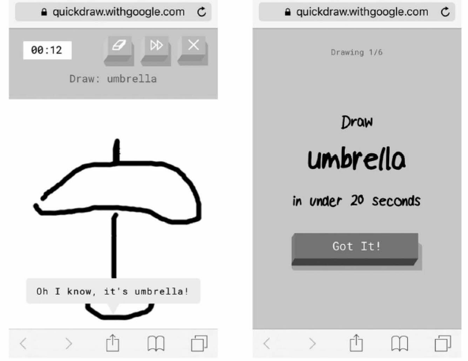
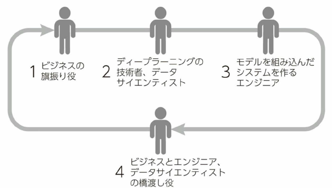

-
- 序章
- ディープラーニングがすべてのビジネスを変える
- ビッグデータでディープラ一二ングが実力発揮
- あらゆる機器をインターネットに接続して稼働データなどを収集するIoTの浸透によって、実社会のデータ化、デジタル化が進む
- トヨタは日米の全乗用車を通信対応に
- 企業の競争力はデータを収集し、価値に変える能力
- 人工知能でイノベーションを生む時代に
- イノベ－ションとは、お客さんに聞いても答えられないような問題を解決したときにのみ生まれる
- デジタル化された実世界の可視化、最適化が進められるようになっている
- さまざまな業界にビッグデータ×人工知能による変革が生まれる

- データ取得
- センサー
- ウェラブルデバイス
- ポイントカード
- スマホアプリ
- API
- デジタルトランスフォーメーションによる業界構造の変革
- 製造
- インダストリアル・インターネット／インタストリ－ 4.0
- 流通
- EC・オム二チャネル
- 運輸・輸送
- 自動運転・シェアリングエコノミ－
- 医療
- 創薬・個別化医療・医療費削減（データヘルス計画）
- 金融
- FinTech （融資査定や保険料の個別化）
- エネルギー／住宅
- スマートハウス／HEMS
- 教育
- EduTech（アダプティブラ一二ングなど）
- 人材
- HRTech
- 建設
- スマートコンストラクション i-Construction
- 公共
- ビ、ッグデータによる新経済・消費指標
- 中小企業にも人工知能の恩恵
- 最近、クラウドサービスを提供する大手IT企業などが、独自データであらかじめ学習をさせた人工知能APl （アプリケ－ション・プログラミング・インタ－フ工－ス）の提供種類を増やしている
- 人工知能を業務改善に活用するなら、誰でも今すぐ利用できる時代
- 1章 超入門
- 人工知能と機械学習とディープラ一二ングはどう違う？
- ディープラ一二ングは機械学習の一部
- 人工知能＝知的な情報処理をするもの、またはその技術
- 大きな概念として知的な処理をする「人工知能j
- 機械学習もディ－プラ一二ングも、人工知能を実現するための手法
- 機械学習のlつの分野が、ディ－プラ一二ング
- 機械学習は人聞がプログラムを作らない
- 機械学習は、プログラムを人聞が作りません。どう判断するかを人間が教えることなく、機械が自分で学ぶことから、『機械学習』と呼ぶ
- 入力の答えとなる出力のセットの例を、たくさん機械に与える
- 機械が答えを出すための手法を、人聞がプログラムとして与えるのではなく、機械が自動的に膨大なデータから学習してモデルを作るのが、機械学習
- 機械の中で、入力に対して正しい答えが導き出されるような「モデル」が作られるだけ
- 膨大な入力と答えのセットから知識を獲得していく
- コンビューターの発達がディープラ一二ングを可能に
- 複数の層の処理を重ねて複雑な判断をできるようにする技術として、深層学習、すなわちディ－プラ一二ングと呼ばれる
- コンビューターの計算力の大幅な向上と、インターネットなどを介して大量なデータを収集することができるようになったことによって、この数年で実用レベルに達してきた
- 「リサーチの洪水Jのごとき人工知能の広がり
- ネットワークインフラや大規模データ処理、機械学習を含むコアテクノ口ジーを外部に提供するためのプロジェクト
- 「モバイルファーストjから「AIファースト」ヘ
- 機械学習で可能となる価値をさまざまなかたちで具現化していく
- グーグルでは、ライフラリをオープンソース化するなど、GCPを通じて、AIファーストの成果を外部に提供するプロジェクトを進めている
- 安価で誰もが画像認識や音声認識、翻訳などの人工知能を利用できるように
- 2章 ディープラーニングの仕組み
- 機械学習「以外jの人工知能とは
- その代表的な方式が、世の中の出来事を論理式で書き出すというもの
- 人聞が『AならばB』という関係をコンビュータ－に教えるので、機械学習ではない
- ゴールを定めておいて、ゴールを達成するには「その前に何をする必要があるか？J
- 人工知能はすべての知的なことを解釈しようと考える
- 分野を限って人工知能の力を最大限に発揮しようと考えたのが工キスパートシステム
- 機械学習以外の人工知能では、コンビューターが考えるための条件式を必ず人間が教えなければならない
- ルールを決めることから、「ルールベースの人工知能Jという
- 機械学習の基本
- 学習するための材料と、学習するための考え方を与える必要がある
- 入力と出力のセットを大量に用意し、コンビューターに学習させていくことを機械学習と呼ぶ
- モデルは、入力から出力を得るための計算のプロセスを表現したもの
- 大量に与えられた信号を機械が計算することで、入力と出力の聞を関係づけるモデルが出来上がる
- 機械学習といってもいろいろな手法がある
- どのようなモデルで機械学習をするかは、人間が設定しなければいけない
- 機械学習で扱われるモデルには、多くの種類がある。
- 「決定木」「帰納推論」 「二ユ－ラルネットワーク」 「デ
イ－プラ一二ング」などが代表的なもの - ここでようやく「ディープラーニングJが出てきました。
- 機械学習のlつの手法が、ディープラーニング
- ニューラルネットワークは脳の神経構造
- 脳の神経の構造を論理的にまねすることで、知的な処理をコンビューターにさせようというもの
- シナプスは、隣接するシナプスからの信号の入力が一定の値を超えると、次のシナプスに対して信号を送り出す一方通行の神経伝達
- 人工的に作ったニューロンがニューラルネットワークの「ノード」と呼ばれる
- 

- ディ－プラ一二ングが、ルールベースの人工知能や他の機械学習と異なるのは、とても単純であること
- 分類の仕方はコンビューターが自分で学んでいく
- 一般的なプログラム言語では、グラフの中の境界線を人聞が設定することで関係を判断する


- ネット上の「遊び場jで、ニューラルネットを理解する
- Playgroundでニューラルネットワークを体感。単純な分類ならば、1層でもOK
- らせんが入り組んだようなパターンの場合、多層化と二ユーロン数の増加によって対応で、きることが体験できます
- ニューラルネットとディ－プラ一二ングを理解する際のポイント
- ニューラルネットでは、お手本データをたくさん読み込むことで、間違いが少なくなるように二ユーロン聞の関係を示す値を調整しながら学習する
- データが複雑になるほど、多くの層の二ユ－ラルネットが必要になる
- 最大のポイントは人聞がプログラムして動くのではなく、コンビューターが自ら特徴を見つけだす
- ディ－プラ一二ングが注目されていることのlつの理由は、人聞を超える可能性にある
- 教師あり学習と強化学習
- サッカーの試合に勝つために、繰り返し繰り返しゲームのスタイルでパスやシユ－トをしながら勝ちパターンを学んでいくといった学習の仕方は、強化学習に近い
- たくさんのデータを入力して、データ自体の構造を発見するといった場合に用いられるクラスタリング分析などで用いられる手法
- 「アルファ碁Jは強化学習をフル活用
- アルファ碁は、架空の対局を自分で繰り返し、勝利という目的に向かつて調整を続けた
- 3章 グーグルのディープラーニング活用事例
- ■未来へ向けて、広がるディープラーニングの活用
- 話しかけて使う家庭のAIコンシェルジュ
- Google Home
- 人間相手のように話が通じる！？
- Amazon Echo
- ■自動運転を支えるディープラ一二ング
- ディープラ一二ングでデータセンターを劇的に省エネ化
- ■人閣の目を超える、ものを見分ける画像認識
- 写真を自動で分類する「Googleフォトj
- 「Googleフォトjでは写真をあらかじめ分類しなくても、例えば「ChristmasJと検索すれば関連する画像を一覧にできます

- お絵描きを人工知能が評価する「Quick Draw」
- Quick, Draw！は人工知能が出すお題（Umbrella（傘））に人が手書きでイラストを箔いて、人工知能に正しく当ててもらうゲームです
- 
- コンピュータも夢を見られるのか？「ディープドリーム」の実験
- 優れたアートや音楽を生み出す「マジェンタj
- 動画像の認識も！「読唇術で人間の専門家に勝つ」
- ■文章を理解するテキスト分析
- 自動で返信メールの候補文を作る「Inbox」
- 迷惑メールフィルタの精度も格段に向上
- 企業の情報検索をスムーズにする「グーグルスプリングボードJ
- 情報を探すための時聞を短縮できる検索インタ－フエースを提供するほか、実用的な情報やお薦めの情報をプッシユ型で提供し、企業で働く人たちの時間を有効に活用できるように支援する
- ■話しかけるだけでコンビューターと意思疎通をする「音声認識」
- 会話しながら人聞をサポートする「GoogleアシスタントJ
- 合成音声もピアノの曲も作成できる「WaveNet」
- ■言語の壁を越える可能性が見えてきた「機械翻訳」
- ニューラルネットでGoogle翻訳が進化
- グーグルでは20 l 6年、Google翻訊にディ－プラ一二ンク、の手法を使ったニューラルネットワークを適用し、翻訳の品質をぐんと高めることに成功
- グーグルニューラル機械翻訊： GNMT）では、そうした区切りはありません。文章の全体を見て、どう訳すか決めていく
- Google翻訳の精度向上前後の翻訳結果
- ■ディープラ一二ングの成果を手軽に使える「機械学習API 」
- lつが機械学習の訓練済みモデルを、APl として提供するかたち
- もうlつが、機械学習ライブラリの「テンソルフ口－ (TeosorFlow）の提供
- クークルが提供する4種類の機械学習AP
- Natural Language APIのテモ画面で例文を入れて、解ができるか確認できます
- • Google Cloud Vision API
- • Google Cloud Speech API
- • Google Natural Language API
- • Google Cloud Translate API
- カスタマイズしたディープラ一二ングを活用できる「テンソルフロー」
- テンソルフローを利用することの最大のメリットは、パイソン（Python）という言語で簡単なコードを書くだけで、ディ－プラ一二ングを利用できること
- APIの利用が「既製服Jだとすれば、テンソルフローの利用は「イージ－オーダーjぐらいのイメージ
- ディープラ一二ングが向く領域、向かない領域
- これからは機械学習やディ－プラ一二ンク、が必ずさまざまな領域で、広がってきます。工ンジ二アだけが知識を持っていればいいのではなく、ビジネスサイドの人もある程度は正確に把握していないといけない
- 得意なところは、大量にデータがあるような非常に複雑な問題
- 複雑な問題になればなるほど、ディ－プラ一二ングは力を発揮
- ディ－プラ一二ングは「企業のサービスの作り方を根底から変える可能性がある
- 機械学習やディ－プラ一二ングをビジネスのどこに適用したらいいか、その発想ができることが重要
- プログラムを書いたり、計算機を買ったりするところまで自前で行う必要はない
- 4章 企業事例編 ディープラ一二ングで業務効率化、園内で続々始まる
- 安藤ハザマ、トンネル工事の岩盤の硬さを判定
- トンネル切羽AI自動評価システムの概念図
- 掘削工事の自動的な最適化まで視野に
- クルマの写真から型式まで特定、オークネットIBS
- 工アロセンス、ドローン空撮データヘ活用
- 少ない教師データで自動車の台数検出システムを構築
- 測量の効率を高めるマーカーを開発
- Peach、音声認識APlで運航案内を24時間化
- 人と人工知能の役割分担
- 運航情報の案内のような人工知能のシステムでできることは、システムに任せればいいでしょう。一方で、複雑な対応は人手でする必要があります
- PeachのCEO （最高経営責任者）である井上慎ーさんは常に、「何かおもろいことをやれ」
- 三井住友FG、カード不正検知精度が劇的に向上
- ディープラーニングでクレジットカードの不正検知精度を向上
- コールセンターへは全席に導入
- lつは安心・安全なサービス提供、2つ目は、顧客サービスの向上や行員の生産性の向上、3つ目はチヤツトボット（自動会話プログラム）のような新たな顧客体験の実現
- 外部の膨大な情報を人工知能で自然言語処理して、役立つセキュリティー対策情報を自動で、導きだすことができる
- まずは行員向けの照会回答業務から利用を開始して精度の向上を進めており、顧客向けサービスへの利用の可能性を探っていきます。
- データから答えは出てこない
- 人工知能活用ステップのフレームワーク化を進め、各部署に共有し、人工知能活用をさらに加速しようとしている
- 人工知能などで業務改善や顧客体験を向上させるために必要なデータを使える状態に整備している
- 先行する画像データの活用
- 音声データはコールセンター中心
- Watsonは自然言語処理と機械学習の技術を使用して、マニュアル、FA Q、判例、診断記録テキストのような大量の非構造化データから洞察を得ることを得意とする
- センサーでは、機器の異常検知や稼働状況の可視化などが主な用途
- まずはコスト削減から入るのが現実的
- l .コスト削減2. 付加価値を高めて新たなビジネス機会を創出3. クリ工イティフ性の向上
- クリ工イティブ性の向上はディ－プラ一二ングならではの期待
- 人の労働には「品質！こぶれJがあり「長時間は働けないJ点、も理解すべき
- 最低限、こうしてシステム開発費用と人件費だけでなく、作業品質と稼働時間などの総合的な要素を含めて投資対効果を考えることも必要になる
- 大切なのは、ディ－プラ一二ングなど機械学習によるシステム開発は、従来のシステム開発とは異なるという認識を持つこと
- 5章 活用フレームワーク編 データ×目的で、整理し、活用の展開図を描こう
- お客さまのデータ活用にかかわる悩みを解決する
- まず小規模なPoC（ブルーフ・オフ・コンセプト：概念実証）を実施し
- ■データ×目的による整理法
- ディ－プラ一二ング活用の目的は、「１ コスト削減」「2. 付加価値を高めて新たなビジネス機会を創出」「3. クリ工イティブ性の向上jです。一方で使われるデータは「l.画像」 「2. テキスト」 「3. 音声」「4.センサ－」となる
- 目的×データからディープラ一二ンクの活用方法を整理する
- 先行する画像データの活用
- 音声データはコールセンター中心
- Watsonは事前言語処理と機械学習の技術を使用して、マニュアル、FAQ、判例、診断記録テキストのような大量の非構造化データから洞察を得ることを得意としている
- センサーでは、機器の異常検知や稼働状況の可視化などが主な用途
- まずはコスト削減から入るのが現実的
- 1.コスト削減
- 2.付加価値を高めて新たなビジネス機会を創出
- 3.クリエイティブ性の向上
- ディープラーニングならではの期待
- 人の労働には、「品質にぶれ」があり「長時間は働けない」点も理解すべきだ
- 最低限、システム開発費用と人件費だけでなく、作業品質と稼働時間などの総合的な要素も含めて投資対効果を考えることも必要
- 大切なのは、ディープラーニングなど機械学習によるシステム開発は、従来のシステム開発とは異なるという認識を持つこと
- ■成功に必要な常識と人材の転換
- 活用の展開図を描けるか
- 業務効率化から始まり、新たな顧客体験の創造、他事業への展開を構想できるのが好例
- （1） ビジネス現場で適用可能かどうか、 (2 ）それに関連したデータを保有しているか、(3）データがディ－プラ一二ング向きかどうかの判断
- 必要な人材像は？
- 
- l .ビジネスの旗振り役2 ディ－プラ一二ングの技術者、データサイ工ンテイスト3. モデルを組み込んだシステムを作る工ンジ二ア4. ビジネスと工ンジ二ア、データサイ工ンテイストの橋渡し役
- 4の橋渡し役が既存の組織にはない、一方で重要な役割を果たす人です。「工ンジ二アと人工知能の技術を理解しながらビジネスとつないでいく人
- 人工知能の技術側はテンソルフローのようなライブラリが整備されたり、多種多様なAPlが提供されたりしてハードルが下がってきた
- どうビジネスに生かすかを描き、人工知能プロジェクトをマネジメントできる人材が求められる段階になってきた
- 機械学習はコモディティー化、次の特別な存在は
- 自社のビジネスに適切に使うことが差異化のポイント
- 人工知能力、特別でなくなった次に特別な価値を持つのは、ディープラーニングに可能な限り早く取り組み、知見を積み、自社に必要になるデータを理解し、1日でも早くそのデータをため始めることが大事
- 6章 将来展望編 ディープラーニングが課題を解決する未来ヘ
- 技術革新の牽引役はディープラ一二ング
- 先進的なアルゴリズムであるディ－プラ一二ングがこれらのファクターを統合して、画像認識を高精度に行えるようにした
- 人間は優秀、アルゴリズムの研究はまだまだ途上
- 人聞は、膨大な知識を使って、文脈（コンテキスト）を把握した上で画像を認識できます。ひと目で状況を判断する「百聞は一見にしかずjといった部分
- コンビューターや自然言語処理、画像処理などそれぞれの分野の研究成果の集大成という側面があります。
- ディープラ一二ングは「データハングリーJ
- 現実世界の課題を解決することがAl研究の目標
- Alや機械学習の研究者の専門知識を統合することで、お客さまの課題を解決できる
- コンピュ－ターがもっと知的になって高度化して、人間がその取り巻く世界を認知、認識するのと同じレベルで認知、認識ができるようになれば、コンビューターによる世界の解釈の仕方が高度化し、人間とコンビューターのインタラクションもより高度化していきます。
- 今は人聞がやっている退屈な反復作業、リスクのある作業、高い精度を必要とする作業は、Alを活用することでコンピュータに任せられる
- おわりに